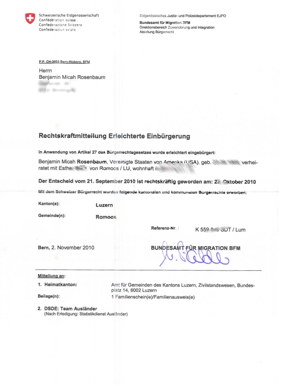

|
|
I can haz swissbürger(recht)
As of this week I have a new ancestral home town, Romoos, Luzern.
I have been looking forward to becoming Swiss for a couple of reasons. One, so I can vote. And two, so I can get arrested without getting deported. My first act as a Swiss citizen will be to build a minaret.
In addition, I am quite proud to have become a Romooser. Romoos is a tiny cow town (in, I believe, the Apline foothills), but a heroic town clerk from there once saved us from a great deal of unpleasantness, by sending a critical fax to the airline we scheduled were to fly on.
The fax said, in essence, that passport or no passport, my wife always had a place in her ancestral village, and they should let her on the goddamned plane. You can see why I like Romoos.

Go, Team Auslaender!
Posted by: Matt at November 9, 2010 02:07 PMGratuliere! Does the cheese taste any better? :)
Posted by: susan at November 12, 2010 07:29 PMThe cheese already tasted pretty damn good. That was one of the big draws, really.
Posted by: Benjamin Rosenbaum at November 21, 2010 09:15 AM